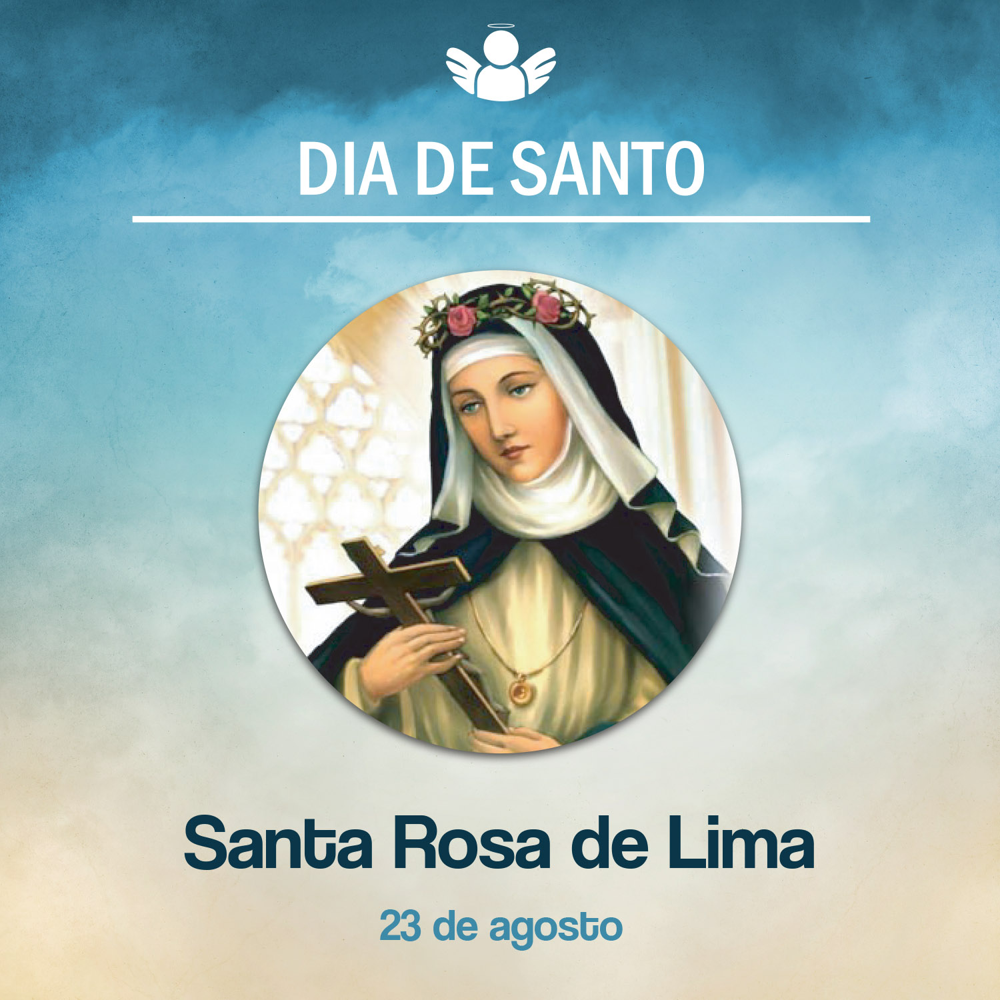

Santa Rosa de Lima
23 de agosto de, 2020
Celebrando a memória de Santa Rosa de Lima, vamos conhecer um pouco de sua história.
Nasceu em Lima, no Peru, em 30 de abril de 1586. Seu nome de batismo era Isabel Flores. Seus pais, Gaspar das Flores e Maria Olívia, eram descendentes de espanhóis. Tinha 11 irmãos, sendo ela a terceira filha do casal. Ganhou o apelido de Rosa, dado por uma empregada da família, pois tinha o rosto rosado.
Por causa de um mau sucesso na mineração, seus pais perderam quase tudo. Então ela cresceu na pobreza, trabalhou no campo, fez costuras e bordados para ajudar sua família. E ainda achava tempo para as suas caridades.
Aos 23 anos, ingressou na Ordem Terceira Dominicana, fazendo os votos de virgindade, e recebeu o hábito. Tinha Santa Catarina de Sena como modelo de vida consagrada. Iniciou então a vida religiosa no quintal de sua casa, porque ainda não havia conventos no Peru. Então foi construída uma cela para ela morar. Atraída pela solidão, vivia em constante oração, penitência e caridade. Prestava seus serviços aos mais necessitados e explorados, como os índios e negros, no cuidado aos doentes. Adotou então o nome de Rosa de Santa Maria, pelo qual é hoje conhecida.
Era uma pessoa mística, e sua vida foi uma constante experiência de Deus. Recitando a frase “Jesus, Jesus, fica comigo”, morreu em 24 de agosto de 1617, após enfermidade e muito sofrimento. Tinha 31 anos de idade. Toda a cidade onde morava parou para acompanhar o sepultamento.
Foi canonizada pelo papa Clemente X, em 1671. É a primeira santa da América Latina a ser canonizada. Também foi proclamada a Padroeira do Peru e, juntamente com Nossa Senhora de Guadalupe, padroeira da América Latina. O povo peruano, em sua homenagem, ergueu um grande santuário dedicado a Nossa Senhora do Rosário de Lima.
O que a vida de Santa Rosa de Lima nos inspira a viver hoje? Ter um coração aberto às necessidades dos mais sofridos. Sermos pessoas místicas que experimentem, no dia a dia, o amor de Deus em nossa vida e com abertura para viver esse amor no silêncio de nosso coração, na oração e no compromisso com o outro.